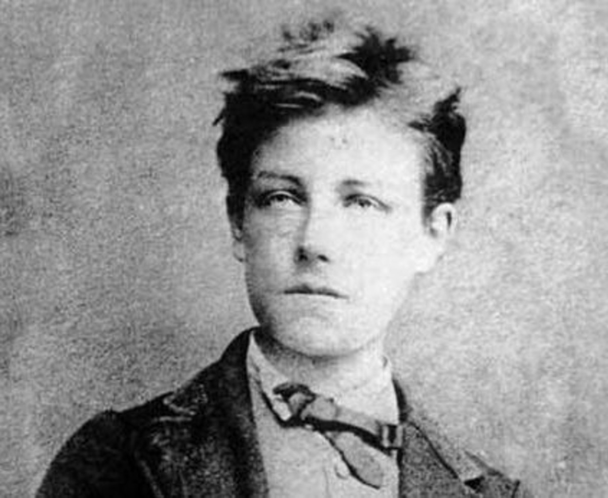
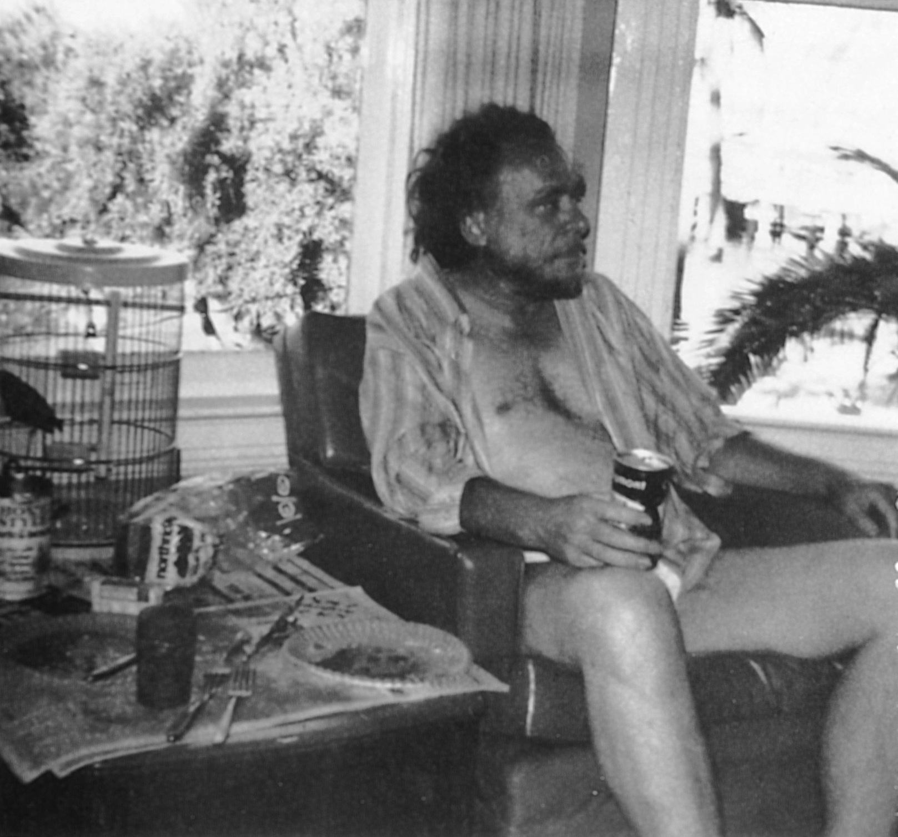
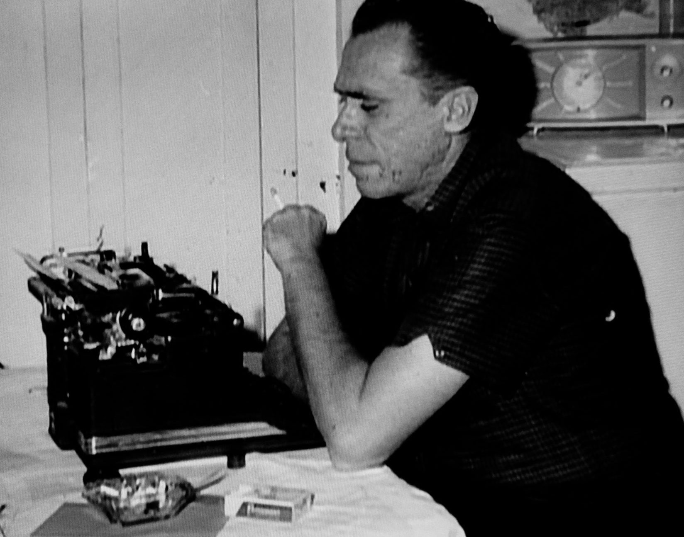
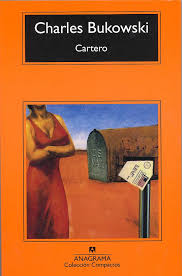
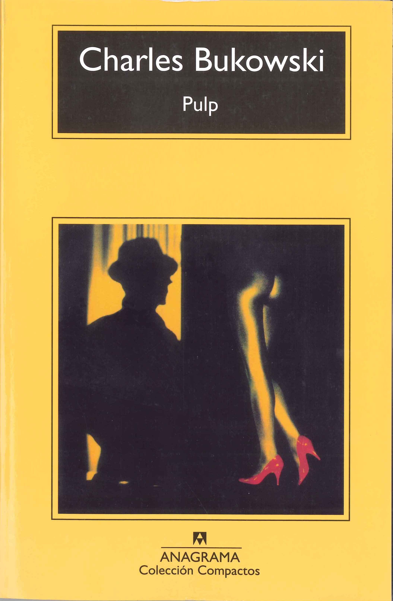

HISTORIA
Datos Basicos

Charles Bukowski, cuyo nombre completo era Heinrich Karl Bukowski, fue un poeta, novelista y cuentista estadounidense de origen alemán.
Nacimiento
Charles Bukowski nació el 16 de agosto de 1920 en Andernach, Alemania.Lugar de residencia
En 1923, su familia se mudó a Los Ángeles, California, donde Bukowski pasó la mayor parte de su vida.Estudios
Bukowski asistió a Los Angeles City College por un breve período antes de dejar los estudios para dedicarse a la escritura.Fallecimiento
Charles Bukowski murió de leucemia el 9 de marzo de 1994 en San Pedro, California, a los 73 años.Infancia y Adolescencia
Su padre, Heinrich Bukowski, era un veterano de la Primera Guerra Mundial que trabajaba de lechero y jardinero en Los Ángeles. La familia sufrió económicamente durante la Gran Depresión, lo que infiere que desde niño Charles atravezo situaciones dificiles sumidas en la pobreza y todo lo quie puede rodear esta problematica Bukowski tenía una relación tensa y conflictiva con su padre, quien era autoritario y abusivo. Charles fue víctima de abusos físicos y emocionales constantes, lo que dejó una huella profunda en su personalidad y en su visión del mundo. En su niñez, Bukowski era un niño retraído y solitario. La pobreza de su familia y los abusos de su padre contribuyeron a que tuviera una infancia infeliz. Además, sufrió de acné severo durante su adolescencia, lo que lo llevó a desarrollar cicatrices faciales y a ser objeto de burlas y rechazo por parte de sus compañeros de clase. Después de graduarse de la secundaria, Bukowski asistió brevemente a Los Angeles City College, donde estudió periodismo, arte y literatura, pero abandonó los estudios antes de obtener un título. Durante su adolescencia y primeros años de adultez, Bukowski tuvo varios trabajos ocasionales y mal pagados. Esta experiencia de la clase trabajadora urbana fue un tema recurrente en su obra posterior.
ESTILO Y TEMAS
Directo y Sencillo
Bukowski utiliza un lenguaje claro, directo y sin adornos. Evita la prosa elaborada y las metáforas complicadas, optando por una expresión más sencilla y accesible.
Autobiografico
Gran parte de su obra está basada en su propia vida y experiencias. Su alter ego literario, Henry Chinaski, aparece en muchas de sus novelas y cuentos, sirviendo como un vehículo para sus historias autobiográficas. Ademas de que no tiene miedo de exponer sus propios defectos, fracasos y vulnerabilidades. Su honestidad brutal sobre sus luchas con el alcoholismo, la pobreza y las relaciones personales es una marca registrada de su estilo.
Cruda, Realista y con Humor Negro lleno de Cinismo
Sus obras frecuentemente se centran en la vida de la clase trabajadora urbana. Bukowski retrata a los marginados, los trabajadores de empleos mal pagados y los inadaptados sociales con una crudeza que desafía la idealización. El alcohol, las apuestas, el sexo y otros vicios son temas recurrentes en su trabajo. Bukowski ofrece una mirada sin filtros a estos aspectos de la vida, presentándolos de manera auténtica y sin juzgar. A pesar de los temas a menudo sombríos, Bukowski incorpora un humor negro y cínico en su escritura. Este humor añade una capa de complejidad y a menudo proporciona un alivio cómico en medio de situaciones difíciles.
OBRAS
Cartero (1971)
Cartero, es una novela semiautobiográfica que sigue a Henry Chinaski, un hombre que trabaja como cartero en Los Ángeles. La novela detalla su vida de excesos con el alcohol, relaciones tumultuosas y su lucha contra la monotonía y la deshumanización del trabajo postal. Chinaski enfrenta la burocracia y las demandas implacables del sistema, lo que lo lleva a una crisis existencial. Finalmente, después de años de soportar las difíciles condiciones laborales, decide renunciar, buscando liberarse de la opresión del empleo rutinario.
Mujeres (1978)
Nuestro protagonista Henry Chinaski, retoma esta novela como un escritor maduro y alcohólico, que se sumerge en una serie de relaciones con diversas mujeres después de una larga sequía sexual. A lo largo del libro, Chinaski se involucra con múltiples parejas, cada una con su propia complejidad y desafíos. Estas relaciones son intensas y a menudo caóticas, marcadas por el sexo, el alcohol y las frecuentes peleas. A través de estas experiencias, Chinaski reflexiona sobre la naturaleza del amor, el deseo y la soledad, ofreciendo una visión cruda y honesta de su vida emocional y sexual
Pulp (1994)
Pulp sigue las desventuras de Nick Belane, un detective privado de Los Ángeles, que se enfrenta a una serie de casos absurdos y surrealistas. Belane es contratado por una clienta misteriosa, Lady Death, para encontrar al escritor francés Céline, que se supone está muerto. A medida que avanza en su búsqueda, Belane se involucra en una serie de casos bizarros, incluyendo la búsqueda de un gorrión rojo y la investigación de un infiel. Los encuentros de Belane con personajes extraños y las situaciones ridículas reflejan tanto su vida desordenada como el caos del mundo que lo rodea.